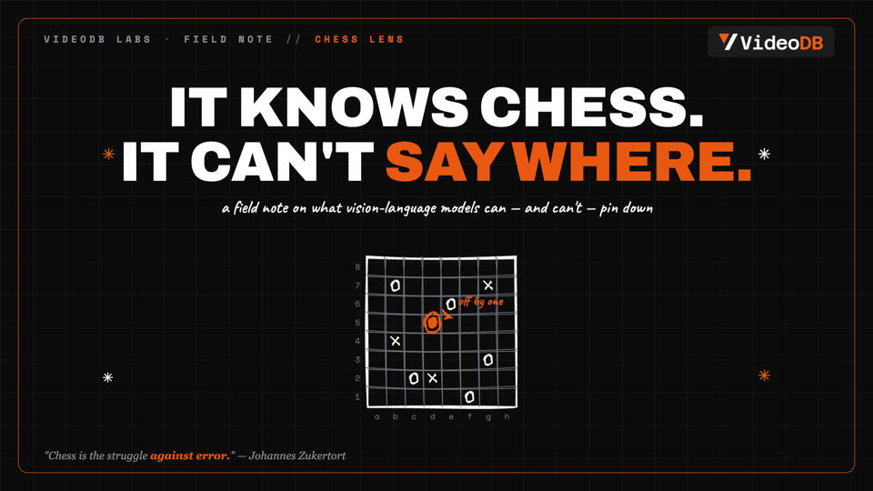

Seven production-tested video pipelines behind one installable skill. Every template is a finished video that renders on your machine — no API keys, no editor.
$ git clone https://github.com/lastHumanCoder-again/videodb-video-studio ~/.claude/skills/videodb-video-studio
Set it up once — then every video is a sentence away. No timeline editing, no plugins, no watermarks.
Prereqs: Node ≥ 18, Python 3, ffmpeg. The installer checks them for you and nothing blocks.
git clone https://github.com/lastHumanCoder-again/videodb-video-studio ~/.claude/skills/videodb-video-studio cd ~/.claude/skills/videodb-video-studio && bash install.sh
No Claude Code? Scaffold directly:
python3 scripts/new_project.py instagram-short my-first-short
Drop VO MP3s in voiceover/, or add an ElevenLabs key. Swap every color, font and logo with one file:
python3 scripts/new_project.py split-ugc acme-promo --brand ./acme-brand.json
npm install npx hyperframes render -o out.mp4 --quality high
Every demo on this page was produced by exactly these commands.
Each card = one pipeline. The video is what ships in the box. Click the command to copy it.
Vertical reel with word-synced karaoke captions, cold-open hook, safe-zone layout.
python3 scripts/new_project.py instagram-short my-reel
Talking head docks to the bottom; cards, stats and clips animate on top — all from one Python dict.
python3 scripts/new_project.py split-ugc my-ugc
Auto-clips analysis reel: detection circles, scan timeline, moment markers.
python3 scripts/new_project.py highlights my-highlights
Launch video with a Playwright screen-capture stack for real product footage.
python3 scripts/new_project.py demo-recording my-launch
Narrated 8-segment video essay: VO-synced scenes, AI images, comparison tables.
python3 scripts/new_project.py youtube-longform my-essay

HTML slides → PDF + per-slide PNGs with hand-drawn rough.js art. The example: a real VideoDB Labs field note, "It knows chess. It can't say where." Click to open.
python3 scripts/new_project.py deck my-deck
Point the analyzer at any reference — it reads the format, pacing, palette and motion with ffmpeg, and (with a VideoDB key) gets a vision-layer description of every scene. The agent compiles a REPLICATION spec, sources rights-clean assets via TinyFish, and rebuilds the video with your content. Style and structure only — never the reference's footage.
python3 scripts/analyze_reference.py reference.mp4
# → analysis.json · frames/ · transcript · scene descriptions
The video on the right was replicated from a monochrome editorial concept short — same 14s structure, hard cuts, spotlight staging — rebuilt as a VideoDB story. Spec: REPLICATION.md